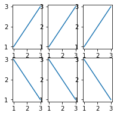

Matplotlib
It is very helpful when you show the data visualization since it can help your audience understand the data more. Matplotlib is the one of the package that can help you achieve this goal.
Import Matplotlib
import matplotlib.pyplot as plt
There are two way to draw the data visualization, plt and ax. So, what is the difference between them?
plt.
fig=plt.figure(num=1,figsize=(3,3))
plt.plot([1,2,3],[1,2,3])
plt.show()
ax.
fig=plt.figure(num=1,figsize=(3,3))
plt.plot([1,2,3],[1,2,3])
plt.show()
It seems there is no difference between them. Actually, it is not the same. plt help to plot just one diagram with (x,y) coordinates while ax can help to plot one or more diagrams in same windows and sets the location of each figure.
In this section, we will focus on ax since it support adding multiple graphs in same windows, which is very common in data visualization. We can start with generating 6 graphs in ax.
fig=plt.figure(num=1,figsize=(3,3))
ax1=fig.add_subplot(231) # we can see this windows is subplot 2*3
ax1.plot([1,2,3],[1,2,3])
ax2=fig.add_subplot(232)
ax2.plot([1,2,3],[1,2,3])
ax3=fig.add_subplot(233)
ax3.plot([1,2,3],[1,2,3])
ax4=fig.add_subplot(234)
ax4.plot([1,2,3],[3,2,1])
ax5=fig.add_subplot(235)
ax5.plot([1,2,3],[3,2,1])
ax6=fig.add_subplot(236)
ax6.plot([1,2,3],[3,2,1])
plt.show()

As we can see, the code above generate 6 graphs and the first rows, as the code write, are all positive slope and the second are all negative slope. There are many functions in matplotlib that support different graphs (e.g scatter plot, bar graph, histogram). Here is a video that I found on Youtube which I believe you can learn more in this video.